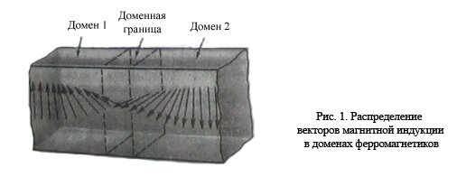
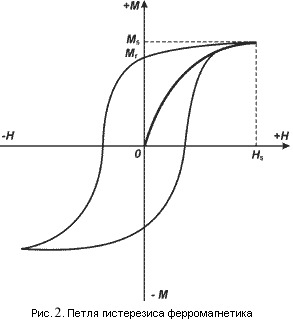
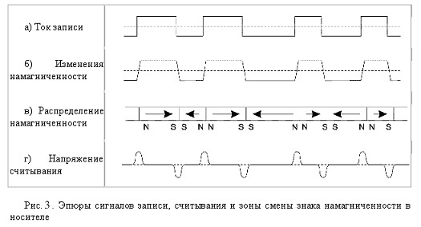
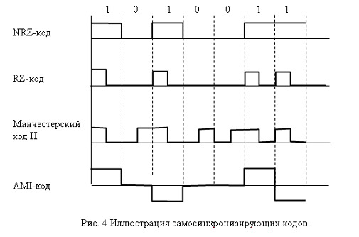
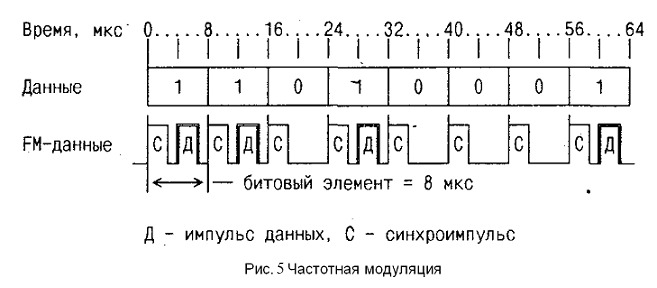
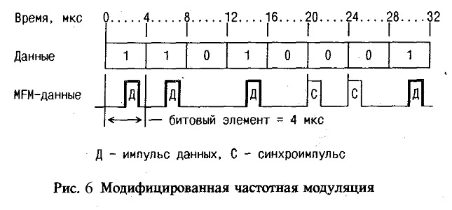
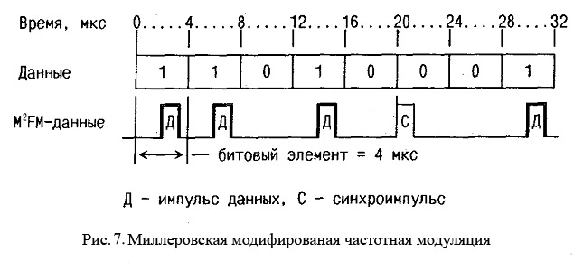
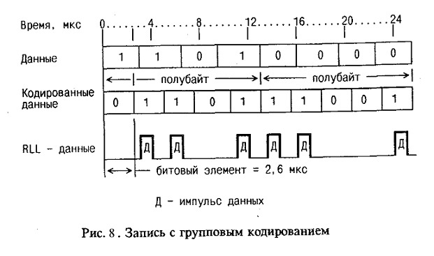

Цифровая магнитная запись, применяемая в компьютерной технике, производится на магниточувствительный (ферромагнитный) материал. К таким материалам относятся некоторые разновидности оксидов железа, никель, кобальт, их сплавы и другие материалы. Магнитное покрытие очень тонкое (до доль микрометров). Причем, чем тоньше покрытие, тем выше качество записи. Покрытие наносится на немагнитную подложку, в качестве которой для магнитных лент и гибких дисков используются различные пластмассы, а для жестких дисков — алюминиевые и стеклокерамические круглые диски. Магнитное покрытие диска имеет доменную структуру, т. е. состоит из множества мельчайших зон, намагниченных определенным образом.
Магнитное покрытие носителя (рабочий магнитный слой), в котором происходит непосредственная регистрация информации и ее хранение, выполняется из магнитотвердого материала со сравнительно большими значениями коэрцитивной силы (HC=12000—80000 А/м) и остаточной индукции (Br = 0,1—0,6 Тл). Единицы напряженности магнитного поля 1Э (эрстед) = 79,58 А/м. Чем больше значение коэрцитивной силы, тем более сильное магнитное поле требуется для перемегничивания материала магнитного покрытия.
Магнитный домен (10-5 – 10-2 см) (от лат. dominium- владение) – это спонтанно возникающая макроскопическая однородно намагниченная область в ферромагнитных образцах, отделенная от соседних областей тонкими переходными слоями. Магнитные моменты атомов в доменах ориентированы параллельно.
В отсутствие внешнего поля хаотично ориентированные магнитные моменты отдельных доменов взаимно компенсируют друг друга, поэтому результирующее поле ферромагнетика близко к нулю. Зависимость намагниченности ферромагнитных материалов от внешнего магнитного поля имеет нелинейный характер и описывается так называемой петлей гистерезиса (рис.2).
При включении внешнего магнитного поля H домены, направление спонтанной намагниченности которых совпадает с направлением поля, начинают увеличиваться в размерах, что приводит к отличной от нуля результирующей намагниченности М. При увеличении поля ферромагнетик переходит в состояние насыщения, при котором дальнейшее возрастание поля уже не приводит к изменениям в его доменной структуре и росту его намагниченности. В этом состоянии, которое характеризуется намагниченностью насыщения Ms, магнитные моменты всех доменов ориентированы одинаково, вдоль направления внешнего магнитного поля. Если намагниченный до насыщения образец начать размагничивать, уменьшая внешнее поле, то из-за необратимого смещения границ доменов даже в его отсутствие сохраняется некоторая намагниченность Mr, называемая остаточной.
Использование зависимости остаточного намагничивания ферромагнитных материалов от величины внешнего намагничивающего поля и лежит в основе процесса записи информации на магнитные носители. Запись информации осуществляется путем последовательного воздействия внешнего магнитного поля, изменяющегося по закону информационного сигнала, на различные участки носителя, а её считывание - путем последовательной регистрации остаточного намагничивания этих участков.
При пропускании тока через обмотку записывающей головки вокруг нее возникает магнитное поле рассеяния, которое воздействует на прилегающую к ней область ферромагнитного рабочего слоя движущегося магнитного носителя. Под воздействием этого поля происходит переориентация элементарных магнитных полей доменов. Домены, намагниченность которых ориентированы вдоль направления внешнего поля, начинают расти, поглощая соседние, состояние которых менее энергетически выгодно. После прекращения воздействия поля записи изменения в размерах и ориентации магнитных доменов частично сохраняются. При периодическом изменении поля записи в рабочем слое носителя возникает цепочка чередующихся участков с противоположными направлениями намагниченности, которые соприкасаются друг с другом одноименными полюсами (рис.3в).
Таким образом формируется магнитная сигналлограмма - последовательность намагниченных участков на рабочей поверхности носителя, однозначно соответствующая временному распределению амплитуд информативного сигнала. Именно это пространственное распределение зон остаточной намагниченности регистрирует затем головка считывания. Следует отметить, что в цифровой магнитной записи при считывании детектируются не сами зоны остаточной намагниченности той или иной полярности, а переходы между ними (рис. 3г).
Задача уничтожения информации на магнитном носителе, заключающаяся в разрушении созданных при записи следов остаточной намагниченности, решается либо перемагничиванием носителя, либо намагничиванием его до состояния насыщения.
На практике первое решение (перемагничивание) реализуют применением специальных головок стирания, которые воздействуют на носитель постоянным или переменным магнитным полем. В технике цифровой магнитной записи, в частности в жестких дисках, головка стирания, как правило, не используется - новая информация записывается непосредственно поверх старой, затирая ее. Эти способы достаточно просты, но кроме значительных затрат времени (сопоставимых со временем записи), они не обеспечивают высокой надежности уничтожения информации. Возможными причинами этого могут быть недостаточно высокий уровень стирающего поля, несовпадение форматов записи и стирания, неточность позиционирования головки в последовательных циклах записи, дефекты носителей и головок и др.
Для решения второй задачи (намагничивания магнитных носителей до состояния насыщения) обычно используются специализированные устройства - намагничиватели, принцип действия которых состоит в воздействии на носитель одним или серией мощных импульсов магнитного поля. Напряженность создаваемого намагничивателем поля может изменяться в зависимости от типа накопителя, но она всегда превышает значение поля насыщения Hs для конкретного материала рабочего слоя. Поэтому носитель равномерно намагничивается до насыщения по всей поверхности, что обеспечивает полное уничтожение информации. Недостатком такого подхода является то, что некоторые типы накопителей, например, жесткие диски, при таком воздействии выходит из строя и дальнейшее их использование становится невозможным.
В современных высокоскоростных системах передачи данных синхронизация передатчика и приемника достигается за счет использования самосинхронизирующих кодов (СК). Кодирование передаваемых данных с помощью СК заключается в том, чтобы обеспечить регулярные изменения (переходы) уровней сигнала в канале. Каждый переход уровня сигнала от высокого к низкому уровню или наоборот используется для подстройки приемника. Лучшими считаются такие СК, которые обеспечивают переход уровня сигнала не менее одного раза в течение интервала времени, необходимого на прием одного информационного бита. Чем чаще переходы уровня сигнала, тем надежнее осуществляется синхронизация приемника и увереннее производится идентификация принимаемых битов данных.
Наиболее распространенными являются следующие самосинхронизирующие коды:
Возможность кодирования сообщения 1010011 с помощью перечисленных кодов иллюстрируется с помощью рис.4.
NRZ-код использует следующее представление битов:
Этот метод кодирования является наиболее простым и служит базой для построения более совершенных алгоритмов кодирования. Однако при передаче длинных серий одноименных битов (единиц или нулей) уровень сигнала остается неизменным для каждой серии, что существенно снижает качество синхронизации и надежность распознавания принимаемых битов (может произойти рассогласование таймера приемника по отношению к поступающему сигналу и несвоевременный опрос линии).
RZ-код.Цифровые данные в этом коде представляются следующим образом:
Этот метод имеет два преимущества по сравнению с кодированием NRZ:
Как видно из рис. 4, даже такой простой линейный код как RZ использует большее число переходов уровня сигнала, чем исходный информационный сигнал в соответствующем коде NRZ. Для информационной последовательности, представленной на рис. 4, в коде NRZ имеется всего 4 перехода, в то время как в RZ уже насчитывается 7 переходов уровня сигнала.
При фазовом кодировании (PE-код) используется следующее представление битов:
Аналогичный код, в котором символ 1 передается двоичной парой 10, а символ 0 – парой 01, называется кодом Манчестер II. Таким образом, манчестерский код обеспечивает изменение уровня сигнала при представлении каждого бита, а при передаче серий одноименных битов – двойное изменение. Обладает хорошими синхронизирующими свойствами. Применяется в технике записи информации на магнитных лентах, при передаче по коаксиальным и оптоволоконным линиям. AMI-код использует следующие представления битов:
AMI-код обладает хорошими синхронизирующими свойствами при передаче серий единиц и сравнительно прост в реализации. Недостатком кода является ограничение на плотность нулей в потоке данных, поскольку длинные последовательности нулей ведут к потере синхронизации.
За время, прошедшее со времени появления накопителей на гибких магнитных дисках диаметром 133 мм, быстро возрастала их популярность как средства массовой памяти с произвольной выборкой для малых компьютеров. Одной из причин этого феноменального роста было то, что за это время емкость дискеты возросла более чем в 10 раз. Примерно 40% этого увеличения явилось результатом улучшений механической части дискового привода, позволивших вдвое повысить плотность размещения дорожек и перейти к записи на обеих сторонах диска. Но остальные 60% — это следствие внедрения различных методов кодирования данных, позволяющих более эффективно использовать рабочую поверхность диска.
В настоящее время широко применяются многие из этих способов, и, рассмотрев четыре самых распространенных, мы, при всех различиях между ними, сможем наиболее полно проследить общий характер, преимущества и ограничения современных способов кодирования данных.
В первых моделях НГМД диаметром 133 мм информация записывалась с плотностью около 20 дорожек/см и только на одной стороне диска, использовалась запись по методу частотной модуляции (FM — Frequency Modulation), здесь и в дальнейшем термины английские), чем ограничивался общий объем неформатной записи в 110 Кбайт. В 1977 г. удалось повысить плотность записи до 38 дорожек/см. Примерно в это же время была удвоена и продольная плотность FM-записи (число бит на единицу длины дорожки) благодаря так называемым методам кодирования с двойной плотностью записи. Ввиду этих улучшений объем информации, хранимой на диске диаметром 133 мм, возрос примерно до 500 Кбайт.
Два наиболее распространенных метода кодирования с двойной плотностью записи получили впоследствии названия модифицированной частотной модуляции (MFM — Modified Frequency Modulation) и миллеровской модифицированной частотной модуляции (М2FМ). Еще через год к ним прибавился метод записи с" групповым кодированием (RLL — Run Limited Length), позволивший повысить продольную плотность записи на 117% по сравнению с FM. Когда НГМД со сдвоенными головками открыли дорогу для двусторонней записи по методу MFM или М2FМ, оказалось возможным хранить на дискете более 1 Мбайт данных. Метод RLL позволил добавить к этому еще почти 170 Кбайт.
Кодирование по методу частотной модуляции FM можно было бы назвать кодированием с единичной плотностью. При этом методе в начале битового элемента записывается бит синхронизации, а в промежутках между последними — биты данных. Битовый элемент определяется как минимальный интервал времени между битами данных, получаемый при постоянной скорости вращения диска 300 об/мин. В случае гибкого диска диаметром 133 мм каждый битовый элемент при FM имеет длительность 8 мкс; бит данных записывается в середине битового элемента, через 4 мкс после бита синхронизации (рис. 5).
При FM гарантируется по меньшей мере одна перемена направления потока, т.е. в данном случае один бит данных каждые 8 мкс. Такой интервал времени соответствует максимальной продольной плотности (по магнитному потоку) 2330 перемен на 1 см и скорости передачи данных 125 Кбит/сек.
То обстоятельство, что при FM длительность битового элемента, определяемая частотой следования синхроимпульсов, постоянна, упрощает кодирование и декодирование по этому методу. Импульсная синхронизация и образование окна длительностью 4 мкс через 2 мкс после синхроимпульса позволяют легко обнаружить наличие или отсутствие перемены в направлении потока. Благодаря этому схемы кодирования-декодирования могут быть очень простыми. Фактически при записи с единичной плотностью схемы выделения данных (так называют схемы, используемые для кодирования и декодирования данных, хранимых на магнитном диске) в большинстве случаев, сводятся к одной простой схеме, вырабатывающей временные стробы, правильно расположенные относительно битов синхронизации.
Но наличие этих битов синхронизации как раз и составляет главный недостаток метода FM: код в принципе малоэффективен, поскольку половина наличной рабочей поверхности диска отводится под биты, необходимые для синхронизации. Если записываются все 1, то частота перемен направления магнитного потока оказывается вдвое выше фактической частоты поступления данных, потому что в каждом битовом элементе записываются и бит синхронизации, и бит данных. Если пользоваться FM-кодированием, то даже при удвоенной плотности дорожек и записи на обеих сторонах диска максимальная информационная емкость диска будет всего 500 Кбайт. Чтобы повысить ее, не прибегая к увеличению плотности дорожек, необходимо повысить продольную плотность за счет более продуманного кодирования, обладающего большей эффективностью, чем FM.
Самые распространенные в прошлом десятилетии методы кодирования известны как модифицированная частотная модуляция (MFM — Modified Frequency Modulation) и миллеровская модифицированная частотная модуляция М2FМ. После внедрения двусторонней записи на магнитные диски по методу MFM или М2FМ оказалось возможным хранить на одном диске более 1 Мбайт данных. По этой причине, диски, записанные по этим методам называют дисками двойной плотности. Эти методы несовместимы, но очень похожи по своей сути.
Оба выше обозначенных метода кодирования подразумевают один и тот же метод записи — без возвращения к нулю с инверсией NRZ (No Return to Zero). Запись по методу NRZ осуществляется путем изменения направления тока в обмотке магнитной головки на противоположную. Методы кодирования сами по себе не влияют на изменения направления тока, а лишь задают их очередность.
Метод MFM позволяет вдвое увеличить продольную плотность записи. Длительность битового элемента сокращается до 4 мкс (рис. 6), а биты синхронизации записываются только в начало ячеек с нулевым битом данных, и лишь в том случае, если в предшествующем и текущем битовых элементах не были записаны биты данных. Единица в любой последовательности вызывает смену полярности.
Метод М2FM (рис. 7) еще более снизил число изменений направления тока — в случае длинной последовательности нулей происходит всего одна смена направления тока на каждые два битовых элемента. Но такое уменьшение числа импульсов затрудняет осуществление синхронизации и не приводит к значительному увеличению емкости диска или скорости передачи данных, поэтому метод М2FM в настоящее время не используется.
Одним из способов повышения информационной емкости диска может явиться, считывание и запись одних только информационных данных. Эта цель достигается в методе записи с групповым кодированием (RLL – Run Length Limited), при котором, присущие MFM и MPM трудности, связанные с образованием временных окон, снимаются прямым способом: синхроимпульсы просто исключаются. При этом отпадает надобность в образовании отдельных окон для битов данных синхронизации.
Естественно, вся схема кодирования при этом должна быть другой. Если, сохранив прежние методы кодирования, просто исключить из записываемой последовательности биты синхронизации, то последствия будут катастрофическими. При записи последовательности из одних 0, в значительной части поверхности диска в этом случае не было бы ни дней перемены направления потока, и у схем выделения данных не оказалось бы никаких средств узнать, какова длина этой последовательности.
RLL ведет происхождение от метода, используемого при цифровой записи на магнитную ленту. Принцип RLL следующий: каждый байт поступающих данных разделяется на два полубайта, а затем полубайты кодируются специальным 5-разрядным кодом, отличающимся тем, что каждое число в нем содержит по меньшей мере одну перемену направления потока. При считывании каждые две 5-разрядные кодовые группы переводятся обратно в двоичные полубайты, объединяются и передаются в виде полного байта.
Особенность, требующаяся от 5-разрядного кода, следующая: в любом его числе не должно быть больше двух рядом стоящих 0. Мало того, и в любой используемой комбинации 5-разрядных кодов должно быть не больше двух стоящих рядом 0. Из 32 кодовых комбинаций, возможных при 5-разрядном коде, этим условиям отвечают 16. Они и приняты для кодирования по методу RLL.
При RLL скорость передачи данных возрастает с 250 до 380 Кбит/сек, а число перемен направления потока на единицу длины до 3330 перемен/см. При скорости передачи 380 кбит/с длительность битового элемента снижается до 2,6 мкс (рис. 8). Кроме того, требуется всего одно временное окно вместо двух, поскольку не нужно разделять перемены потока, соответствующие данным и синхронизации, и любая перемена направления потока всегда будет происходить в середине битового элемента. При длительности битового элемента 2,6 мкс в худшем случае, возможном при RLL, а именно, при двух рядом стоящих 0, в любом интервале 7,8 мкс будет по меньшей мере один импульс.
Поскольку этот максимальный интервал предсказуем, импульсы данных с равным успехом могут служить и для синхронизации, что делает метод RLL самосинхронизирующимся и самотактируемым. Кодированные этим способом данные могут записываться с еще большей продольной плотностью, чем при других существующих методах записи с двойной плотностью. При RLL на каждой дорожке можно записать 7,6 Кбайт данных, а при MFM или МPМ — 6,25 Кбайт. Как уже отмечалось, при двусторонней записи с плотностью 38 дорожек/см это соответствует увеличению информационной емкости диска на 170 Кбайт.
Существует много вариантов RLL, основные из которых 1.7; 2.7; 3.9. Самым популярным является RLL 2,7, обеспечивающим высокую плотность и среднюю надежность. Цифры в обозначении кода соответствуют максимальной и минимальной длине последовательности нулей (ячеек перехода), содержащихся в кодовом слове между соседними зонами смены знака. Соответственно, FM и MFM можно назвать частными случаями RLL и обозначить как 0,1 и 1,3. Например, последний означает, что между двумя зонами смены знака может располагаться от 1 до 3 ячеек перехода знака.
В последние годы некоторое распространение получил так называемый ARLL-метод кодирования. Его отличие от RLL-метода заключается в том, что наряду с логическим уплотнением данных производится еще и повышение физической частоты обмена данными между контроллером и накопителем примерно в 1,5 раза. Этот метод позволяет увеличить полезную емкость накопителя, однако он предъявляет весьма жесткие требования к носителям информации и в настоящее время его используют отдельные фирмы, достигшие неординарного уровня в технологии изготовления дисков.
При рассмотрении методов кодирования приводились временные соотношения применительно к НГМД. Что касается НЖМД, то все вышеприведенные соображения применимы и к ним. Единственное отличие заключается в том, что обмен данными с НЖМД производится со скоростью примерно в 10 раз большей, чем с НГМД, т.е. выше физическая частота данных и, соответственно, плотность данных на носителе. Временные же соотношения остаются прежними.
При МPМ-кодировании (FM-кодирование в современных НЖМД не применяется) обмен производится со скоростью 5 Мбит/сек. При RLL кодировании эта скорость возрастает до 7,5 Мбит/сек, а при ARLL-кодировании — до 10 Мбит/сек. Некоторые фирмы применяют еще более совершенные методы кодирования и более высокие скорости обмена данными. Например, компания Samsung Electronics объявила о применении нового метода цифровой записи PRML (Partial Response Maximum Likelihood — алгоритм частного срабатывания по максимальной вероятности), который позволяет повысить плотность записи данных благодаря улучшенной цифровой системе фильтрации, а также по¬высить производительность за счет увеличения скорости обмена данными. В этом методе происходит предвыборка и анализ мгновенных значений напряжений, а затем фильтрация и «выведение полезного» сигнала цифровым способом. Таким образом, можно повысить плотность записи данных на 40%.
{kind=link}
{kind=link}
{kind=link}
{kind=link}
{kind=link}
{kind=link}
{kind=link}
{kind=link}